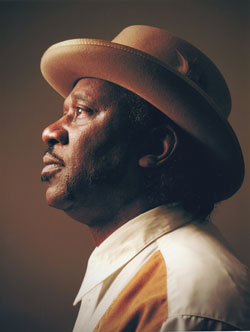

Интерес к приезду в Россию Мада Морганфилда (Mud Morganfield), безусловно, связан в первую очередь, с тем, что он является старшим сыном знаменитого Мадди Уотерса (Muddy Waters). Назвать самого Мада известным исполнителем, конечно, нельзя, а вот его отец - фигура культовая не только для блюза, но и для рок-музыки в целом. Может ли сын блюзовой звезды достойно выглядеть на фоне своего легендарного отца? Для российской публики утвердительный ответ на этот вопрос был совсем не очевиден... Вот с таким биографическим грузом зрительских ожиданий Мад и прилетел в Москву на серию клубных концертов. И надо сказать, ожидания он оправдал - столичная публика очень тепло приняла музыканта.Мад выступал в роли вокалиста и шоумена. Аккомпанировала ему группа российских музыкантов: Омар Итковичи - гитара (Омар специально прилетел из Аргентины), Александр Соловьев - гармоника, Роман Имашев - клавиши, Евгений Ринкевич - бас и Михаил Васильев - ударные. Сыгранность получилась отличная. Что касается манеры исполнения Мада Морганфилда, то ее можно назвать весьма скупой и сдержанной - впрочем, сдержанной была и манера его отца, Мадди Уотерса. Сходство с ним оказалось, кроме того, и в голосе, и во внешности - просто какой-то блюзовый призрак на московской сцене. Неудивительно, что и в интервью, проходившем в шумной атмосфере блюзового заведения "Cotton Club", речь зашла о семейственности. В разговоре принимал участие и Андрей Евдокимов - главный редактор сайта blues.ru.
Алексей Щёголев - Мад, спасибо за концерт. Это было великолепно.
Мад Морганфилд - Спасибо, что пришли меня послушать...
А.Щ. - Вам так удалось сыграться с русскими музыкантами...
М.М. - Это фантастика, вы сами видели... просто фантастика!
А.Щ. - Вы играли с ними раньше?
М.М. - Никогда.
А.Щ. - И у вас не было общих репетиций?
М.М. - Нет, никаких репетиций.
А.Щ. - Но, по крайней мере, порядок номеров вы обсуждали?
М.М. - Да, был сонг-лист, все вещи по порядку. Но только и всего.
Андрей Евдокимов - И это вещи из золотой книги блюза...
М.М. - Это правда.
А.Щ. - В интервью вы часто говорите, что вы - не Мадди Уотерс. И что не хотите быть похожим на Мадди Уотерса. А понимают ли это критики, продюсеры и публика?
М.М. - Ну... я просто яблоко, которое выросло на дереве моего отца. И моя цель - сохранить его наследие живым. Сегодня вечером вы слышали больше его песен, чем моих. А что касается "саунда Мадди Уотерса"... Есть только один Мадди Уотерс - это мой папаша, и он неповторим. В каком-то смысле люди видят его во мне, потому что я пою его песни, но он мне сам говорил, что нужно делать то, что нравится людям. Вот я это и делаю. А может, Богу важно, чтобы я пел.
А.Е. - Стольким людям во всём мире нравится слышать голос Мадди...
М.М. - Вы знаете - конечно, я не просто блюзмен, который сам по себе поет. Я всегда буду сыном Мадди Уотерса, по крайней мере - в своих записях.
А.Е. - Вы часто в детстве видели отца?
М.М. - Довольно редко. Мой отец был всегда в пути, всегда в разъездах. Песня путешествует, и нужно следовать за ней. Кроме того, отцу нужно было кормить меня, моих братьев и сестер.
А.Щ. - А кто сегодня для вас главный критик, чей голос для вас важен? Это близкие люди или профессионалы от музыки?
М.М. - Любой человек. Каждый может быть критиком. Я очень чувствительный в этом смысле, я живу среди людей, и для меня важно, что окружающие думают обо мне. Еще раз подчеркну - я живу среди людей и хочу им нравиться, хотя, наверное, всем нравиться нельзя. Я стремлюсь к тому, чтобы большая часть мира меня любила. Негативная критика не для меня.
А.Щ. - Думали вы о другой, НЕмузыкальной карьере?
М.М. - Музыка всегда была моим призванием. Но я, действительно, решил ею заняться довольно поздно. Я не собирался посвящать музыке свою профессиональную карьеру. Профессией музыка стала для меня только в последние 4 года.
А.Щ. - Почему вы решили приехать в Москву?
М.М. - Я езжу по всему миру, чтобы играть блюз. Показывать себя и выражать свое восприятие мира. Это для меня очень важно, а еще важна моя семья. Она - мой второй критик после зрителя.
А.Щ. - Мадди Уотерс услышал блюз от отца. И вы, в свою очередь, услышали блюз от отца. Теперь вы сами намерены продолжить эту традицию?
М.М. - У меня десять детей. Шестеро парней и четыре девочки. Парни не поют блюз совсем... вообще ничего не поют. А девочки поют в церкви... Но они поют, как ангелы...
А.Щ. - Я заметил, что у вас на сайте много семейных фотографий. Семья для вас много значит?
М.М. - Абсолютно все. Как и для вас, согласитесь.
А.Е. - И вы женаты, и у вас есть дети - все как положено?
М.М. - У меня есть дети, но ... я не женат! I got my mojo working! (смеется) Я уже привык к нему и иногда проверяю - вдруг не работает (смеется). У меня там есть замечательная девушка - она фантастическая, а мне еще до дома ждать целых три дня!
А.Щ. - Что привезете из Москвы в качестве сувенира себе домой?
М.М. - Подарки я еще не выбрал, только присматриваюсь. Собираюсь сделать это завтра в аэропорту. У меня есть мама. Ей 80. Я собираюсь привезти ей много подарков... Она для меня - полмира. Все, что я делаю - все посвящаю маме.
А.Е. - Я был поражен, как сегодня люди реагировали, слушая ваш блюз. А я, поверьте, знаю в этом толк...
М.М. - Да, это было великолепно. Я здесь всего несколько дней, и это третий концерт... Но я уже понял, что люди здесь особенные, мне очень понравились...
А.Щ. - У вас еще будут концерты в Москве? Или это последний?
М.М. - Нет, это последний концерт (18 октября 2009 - А.Щ.). Я завтра улетаю в Швейцарию.
А.Щ. - Но вы еще приедете к нам?
М.М. - Я надеюсь, да!
А.Е. - И мы надеемся на это!
Алексей Щёголев, 18.10.2009
Выражаю глубокую признательность Юрию Ивановичу Костину ("Cotton Club") за содействие в организации интервью.